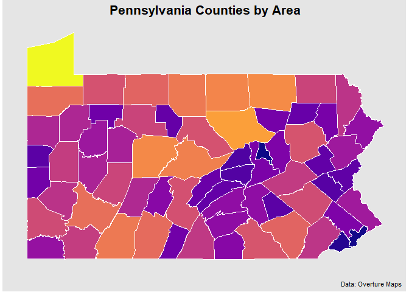

Usage
Replicating duckdb examples fromm the Overture docs
library(overtureR)
library(dplyr)
#>
#> Attaching package: 'dplyr'
#> The following objects are masked from 'package:stats':
#>
#> filter, lag
#> The following objects are masked from 'package:base':
#>
#> intersect, setdiff, setequal, union
library(ggplot2)
counties <- open_curtain("division_area") |>
# in R, filtering on variables must come before removing them via select
filter(subtype == 'county' & country == 'US' & region == 'US-PA') |>
transmute(
id,
division_id,
# STRUCT/MAP columns can be accessed as column[["subcolumn"]] in transmute
primary = names[["primary"]],
geometry
)
# Plot the results
counties |>
collect_sf() |>
ggplot() +
geom_sf(aes(fill = as.numeric(sf::st_area(geometry))))
library(overtureR)
library(dplyr)
# lazily load the full `mountains` dataset
mountains <- open_curtain(type = "*", theme = "places") |>
transmute(
id,
primary_name = names[["primary"]],
x = bbox[["xmin"]],
y = bbox[["ymin"]],
main_category = categories[["primary"]],
primary_source = sources[[1]][["dataset"]],
confidence,
geometry # currently no duckdb spatial implementation
) |>
filter(main_category == 'mountain' & confidence > .90)
head(mountains)
#> # Source: SQL [6 x 8]
#> # Database: DuckDB v1.0.0 [Arthur.Gailes@Windows 10 x64:R 4.2.1/:memory:]
#> id primary_name x y main_category primary_source confidence
#> <chr> <chr> <dbl> <dbl> <chr> <chr> <dbl>
#> 1 08f464e0e312… Kawaikini -159. 22.1 mountain meta 0.954
#> 2 08f464e3b1a2… Kalepa -159. 22.0 mountain meta 0.938
#> 3 08f464e05984… Sleeping Gi… -159. 22.1 mountain meta 0.945
#> 4 08f464e3a4d0… Nounou-East… -159. 22.1 mountain meta 0.945
#> 5 08f464e05514… Makaleha Mo… -159. 22.1 mountain meta 0.965
#> 6 08f464e03538… Makana -160. 22.2 mountain meta 0.938
#> # ℹ 1 more variable: geometry <list>